칫솔은 어디에 버려야 할까요?
오답률
0%
A
정답! 칫솔은
일반 쓰레기
에 버려야 해요!
칫솔 몸체가 고무나 기타 다른 종류들과
섞여있는 경우가 많기 때문에
일반 쓰레기로 버려야 해요.
칫솔은 어디에 버려야 할까요?
오답률
0%
정답! 칫솔은 일반 쓰레기에 버려야 해요!
칫솔 몸체가 고무나 기타 다른 종류들과
섞여있는 경우가 많기 때문에
일반 쓰레기로 버려야 해요.